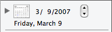
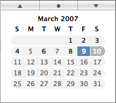

Changing the Date
When Journler launches it opens your notebook to the date or folder last selected. To view the entries on a previous date, navigate to the year and month using the calendar's buttons. The circle jumps to today's date while the triangles send you a month into the present or past. When you have reached the right month click once on the desired day inside the calendar to select it. Please note that it is not currently possible to select more than one date at a time.
The Small Calendar
Journler initially uses the small calendar, giving you more room for your folders. You can change this setting in Appearance Preferences or by right clicking in that space. When the calendar is small like this, temporarily reveal the full sized calendar by clicking the disclosure triangle to the left of the calendar button once. Click the calendar button itself to jump to today's date and click any of the date numbers to change the day, month or year.
Meaningful Colors
The calendar highlights dates differently to signify the presence of entries, today's date and the currently selected date.
Lighter days have no entries while darker days do. The blue day is currently selected while the grey one is today's date, if today's date is not also the selected date.
The calendar updates itself automatically whenever you create or delete entries.